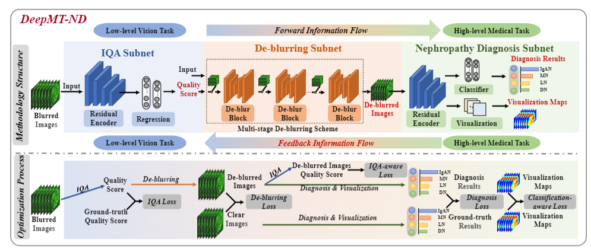
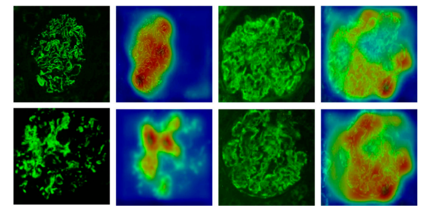
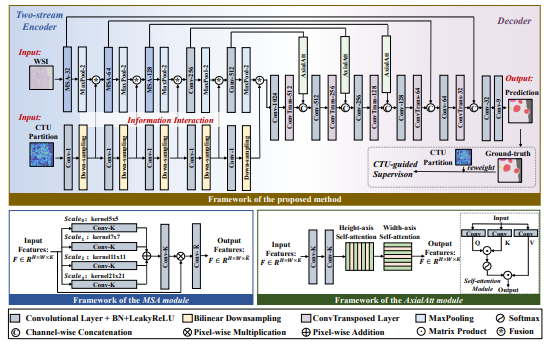
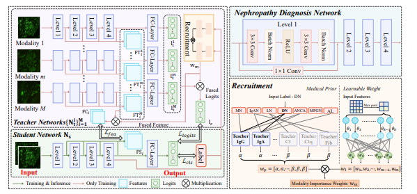
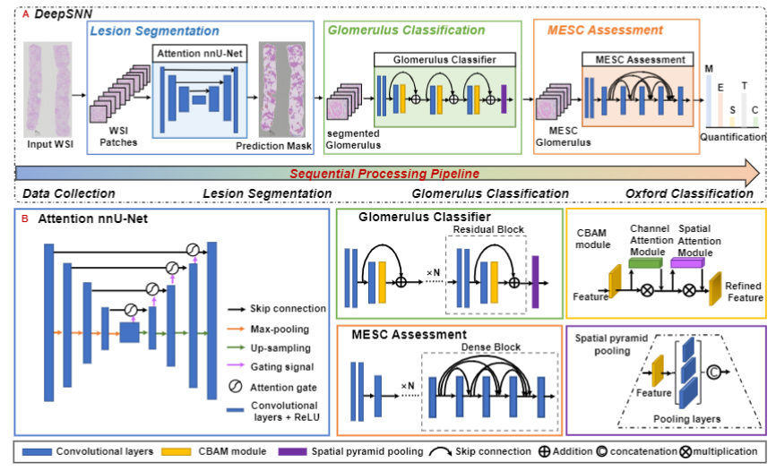
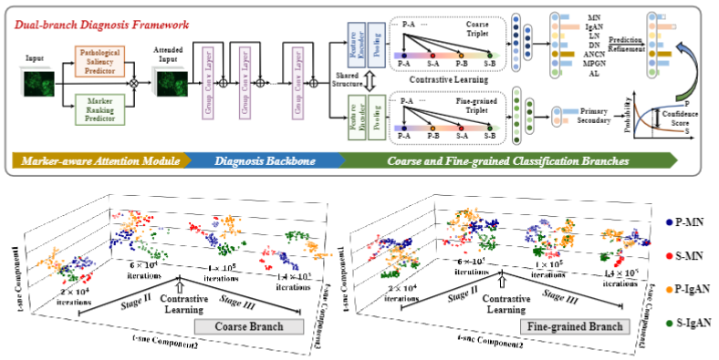
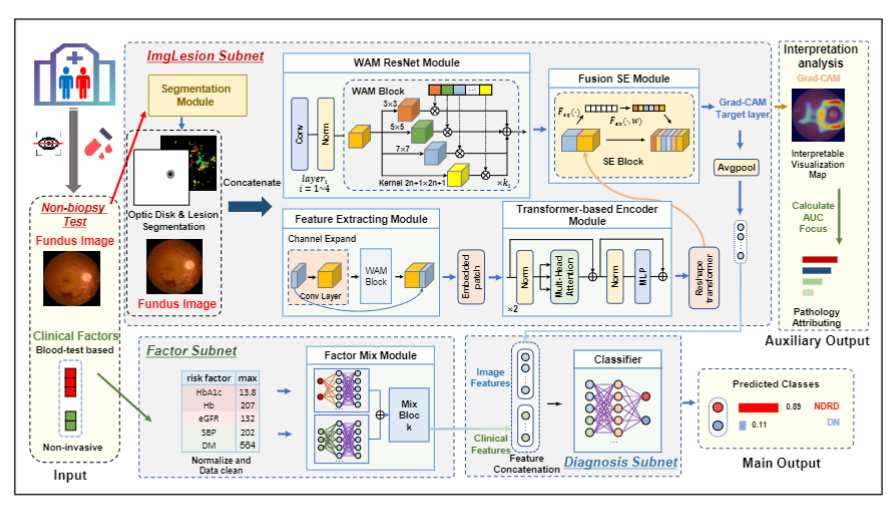

Fu, Yibing |
I am a 2nd-year master student at the Multimedia Computing Towards Communications (MC2) Lab, Beihang University, China, under the supervision of Prof. Mai Xu and Postdoc. Lai Jiang. My research interests include medical image analysis, computer vision and machine learning. I obtained the B.Sc. degree in 2021 at the Beihang University, P.R. China.
|  |
Deep Multi-task Learning for Nephropathy Diagnosis on Immunofluorescence Images. |
|  |
Multi-Task Learning-Based Immunofluorescence Classification of Kidney Disease. |
|  |
Coding tree unit partition guided two-stream framework for renal histopathology identification |
|  |
Recruiting the best teacher modality: A customized knowledge distillation method for IF based nephropathy diagnosis |
|  |
A deep sequential neural network for IgA nephropathy histopathology identification and Oxford classification. |
|  |
Explainable Deep Learning for Fine-grained Nephropathy Diagnosis on Immunofluorescence Images. |
|  |
Multimodal transformer system for diabetic nephropathy diagnosis based on fundus images |